Hela Admin Portal - The Heart Behind the Experience
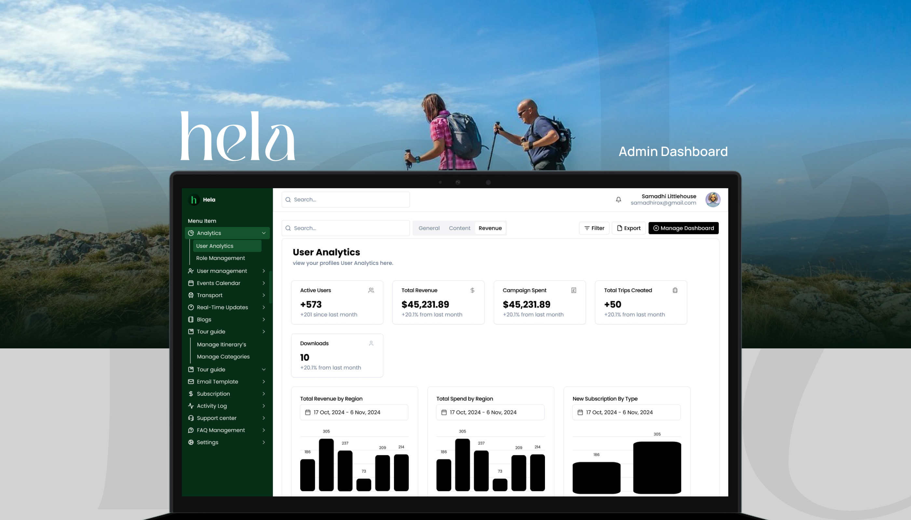
While most of Hela's spotlight was on creating a seamless travel experience for end-users, there was a powerful engine working behind the scenes: the Hela Admin Portal. This wasn't just a back-office tool. It was an all-in-one, SaaS-style platform built to empower admins, editors, vendors, and internal teams to manage the entire travel ecosystem in one place.
As the UX Designer, I was responsible for crafting this experience from scratch — translating operational complexity into a system that felt clear, capable, and even delightful to use.
Understanding the Challenge
From the outset, it was clear that the admin portal would be more than just a backend interface — it would be the operational core of the entire Hela ecosystem. Unlike the end-user app, which was designed to inspire exploration and ease of travel, the admin portal had to be precise, powerful, and process-driven. But the real challenge wasn't just building one dashboard — it was building one system for many different users.
Multiple User Types, Multiple Needs
- Internal Admins: Responsible for content moderation, user management, analytics tracking, and system maintenance. They needed visibility and control.
- External Partners: These were contributors and tourism authorities who submitted blog posts, cultural events, or destination updates. Their workflow focused on submission, review, and publishing.
- Vendors: Local service providers (e.g., guides, hotels, transport companies) who managed their offerings through a vendor portal section — handling profiles, availability, and booking responses.
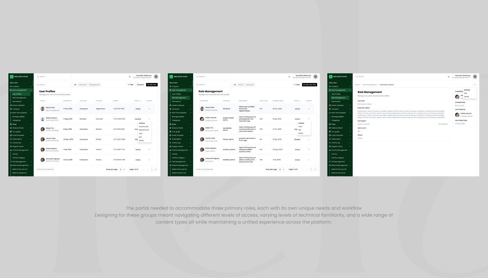
Starting with Empathy & Discovery
I began the process by organizing a series of discovery sessions with key stakeholders including product owners, backend developers, and intended admin users. The goal was to uncover:
- What tasks were essential on a day-to-day basis?
- Where were the bottlenecks in their current tools (or spreadsheets)?
- How could the portal reduce manual work and increase clarity?
To make sure we were building the right thing, I created workflow maps that illustrated the end-to-end process for key actions: publishing a travel guide, approving a new vendor, scheduling an event, reviewing flagged user activity, and more.
Each task was broken down into smaller actions and decision points, helping me identify where users might encounter friction or need clarity in the interface. These insights formed the foundation for the user journey flows and information architecture in the next phase.
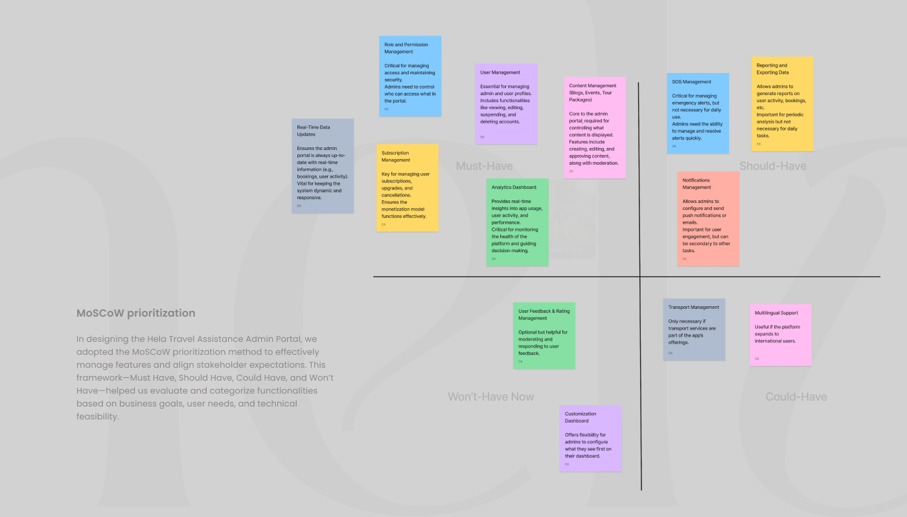
Aligning Vision with Real-World Constraints
Another layer of the challenge was balancing this ideal user experience with real-world limitations such as system constraints, backend architecture, and phased development timelines. The portal had to be powerful but lean enough to be launched alongside the mobile app MVP.
So instead of building everything at once, I prioritized core workflows that supported the initial rollout — including content publishing, user visibility, and vendor onboarding — while planning modular extensions for more advanced features (like analytics dashboards and AI-powered tools) in future iterations.
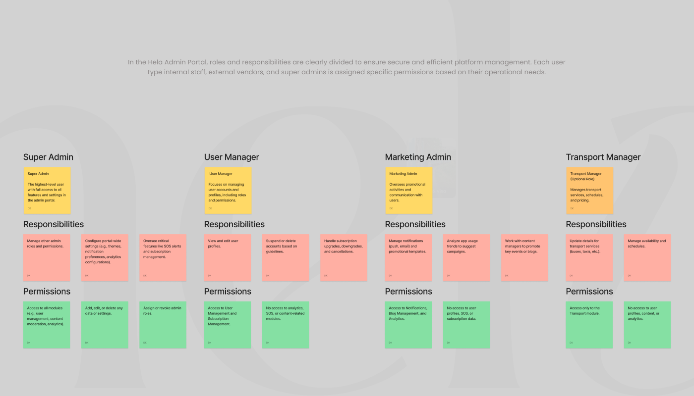
Defining the Structure
With a strong understanding of user goals, workflows, and priorities, I transitioned into defining the structural backbone of the portal. This phase was all about translating complexity into clarity — ensuring that even the most powerful capabilities felt intuitive and manageable.
Armed with those insights, I moved into information architecture and user flow design. I created task-based flows for each user role — mapping how a content editor, a system admin, and a vendor might interact with the portal.
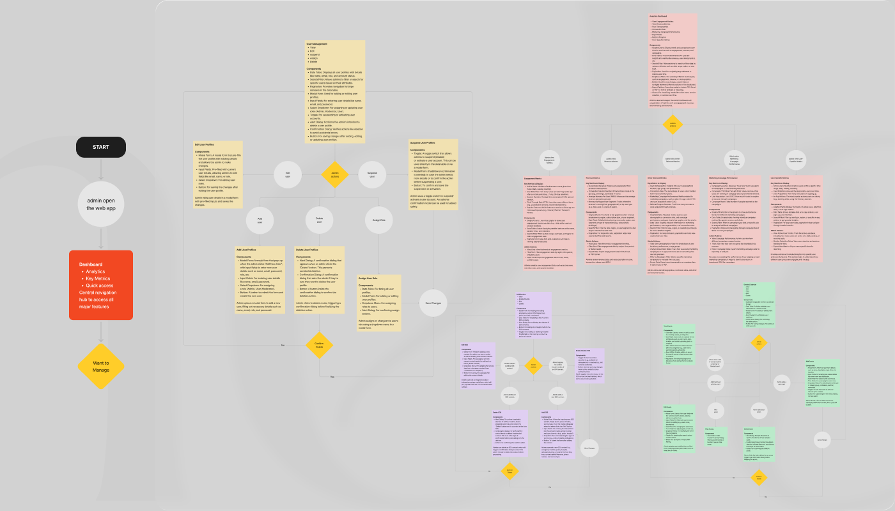
The modular approach wasn't just about organization — it was about scalability and clarity. By grouping tasks and features in ways that mirrored user intent, I reduced cognitive load and helped admins focus on what mattered most in the moment.
To ensure consistency across modules, I developed a shared design system that handled layout grids, button styles, tables, modals, and form fields. This helped maintain a visual rhythm across pages, but also sped up prototyping and future updates.
This structural foundation made it easy to grow the platform over time — whether it was adding a reporting engine, integrating AI-generated content tools, or expanding vendor capabilities — without overwhelming the original experience.
Design & Prototyping
Once the structure and flows were defined, I moved into the design execution phase, starting with low-fidelity wireframes. At this stage, the focus was purely on function over form — understanding what each screen needed to accomplish and how users could move through tasks with minimal friction.
I designed interactive low-fidelity prototypes that emphasized:
- Task clarity: Users should know exactly where to go and what to do next.
- Simplified layouts: Content hubs, user tables, and forms were laid out with collapsible sidebars and sticky headers to support long-scroll behavior and dense information architecture.
- Utility-first UI elements: Filters, dropdown actions, confirmation modals, and inline editing were introduced early to simulate real admin scenarios.
These prototypes were tested through internal stakeholder walkthroughs, including developers, product leads, and team members who represented each admin role. Feedback loops were fast and collaborative, allowing us to make iterative improvements quickly — whether that meant reordering table columns, adjusting filter logic, or introducing role-specific dashboards.
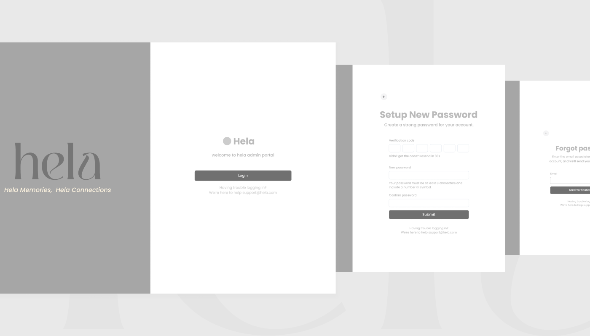
From Wireframes to High-Fidelity Design
With functional alignment confirmed, I began transforming the experience into high-fidelity visuals — guided by Hela's core brand identity but tailored for a more professional, utility-oriented audience.
To maintain both visual clarity and scalability, I developed a neutral, responsive design system specifically for the admin interface. This system balanced structure and flexibility, ensuring that new modules or user types could be introduced without design debt. Key highlights included:
- A clear visual hierarchy using type weight, spacing, and subtle color coding to prioritize user attention across complex data.
- Reusable UI components like filter bars, status chips, approval tags, and context menus, which not only improved usability but also reduced development effort.
- Dark and light mode support, considering long working hours for internal users who might prefer different viewing modes.
- Accessibility-focused interactions, including high contrast states, keyboard navigability, and proper ARIA labeling — making the experience inclusive and standards-compliant.
- Responsive behaviors for tablet and small desktop environments, ensuring the system could scale for on-the-go use, especially for vendors managing their listings on-site.
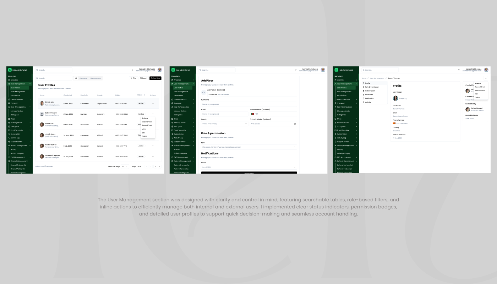
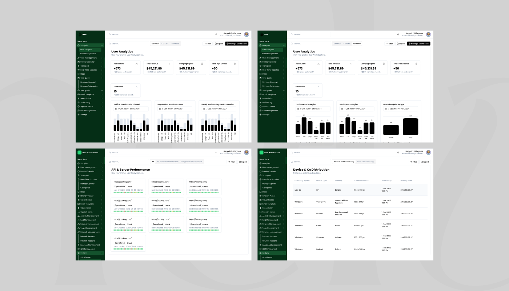
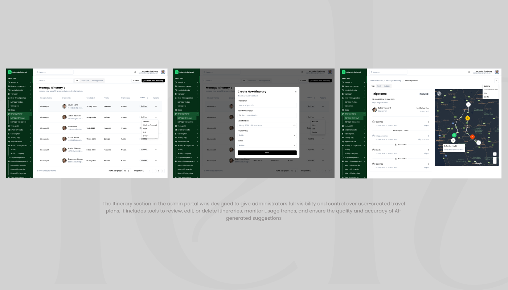
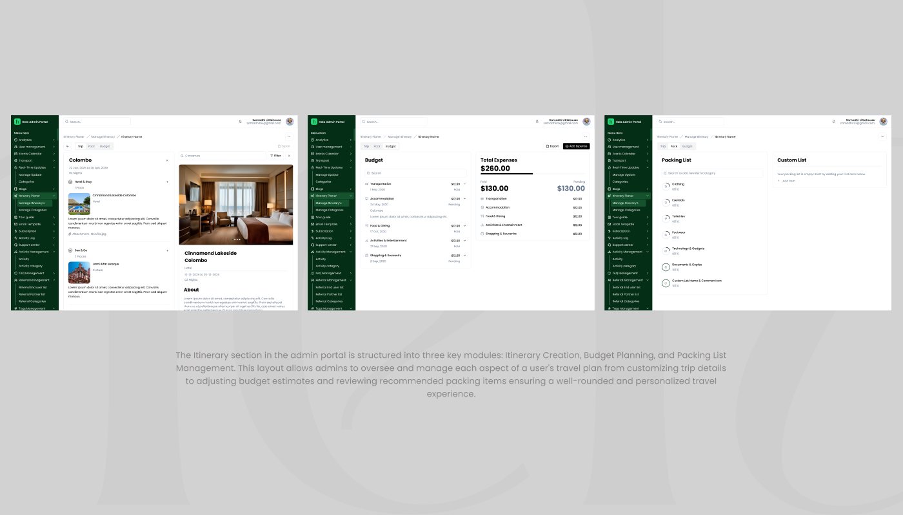
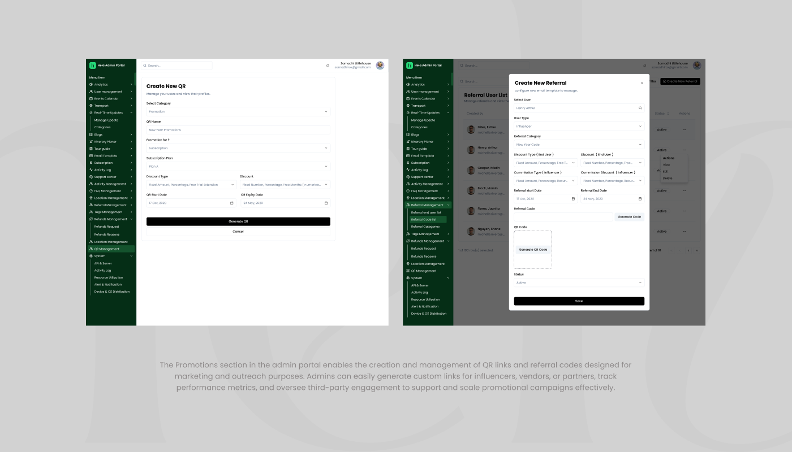
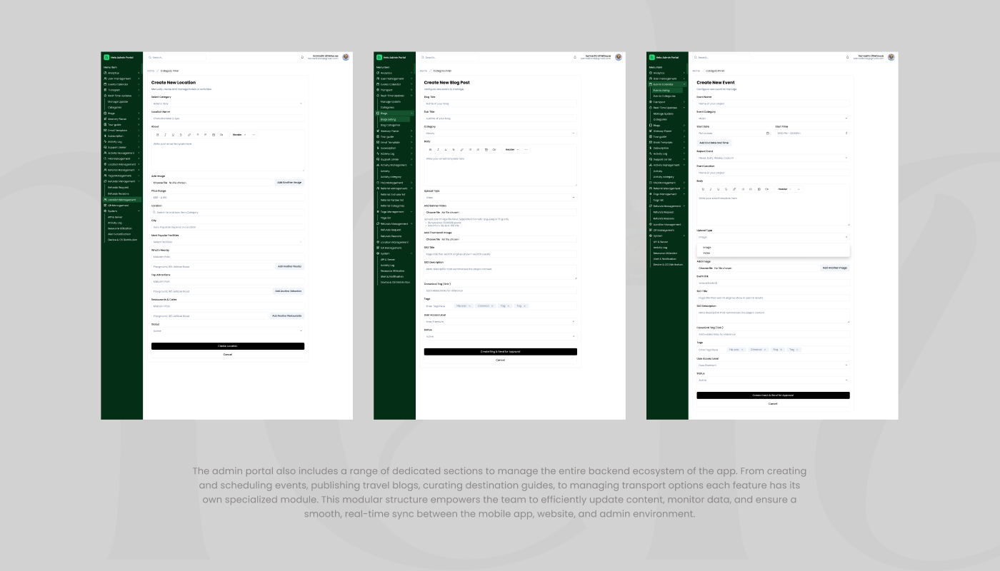
Developer Collaboration & Iteration
I worked side-by-side with developers during implementation, using Figma's dev mode for detailed specs and interaction notes. During sprints, I participated in reviews to ensure fidelity to the design, helped solve real-time edge cases, and made UX refinements based on system behavior.
This version of the portal represented the MVP, focused on launching essential features to support the initial app release. But from day one, we designed it with scalability in mind — knowing more advanced functionality would follow.
Looking Ahead: AI and Beyond
With the MVP launched, we began collecting feedback from internal users and vendors. These insights informed the next wave of features, including plans to integrate AI-driven tools for itinerary management, content moderation, and personalized user insights — all of which would be controlled through the admin interface.
The portal is evolving into a true central command system — one that not only supports content management but powers intelligent decisions and connects all parts of the Hela ecosystem.